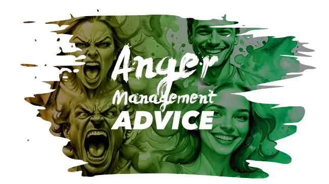

Tips for anger:
Anger management: 10 tips to tame your temper. Keeping your temper in check can be challenging. Use simple anger management tips — from taking a timeout to using "I" statements — to stay in control.
Ready to get your anger under control? Start by considering these 10 anger management tips.
1. Think before you speak. In the heat of the moment, it's easy to say something you'll later regret. Take a few moments to collect your thoughts before saying anything. Also allow others involved in the situation to do the same.
2. Once you're calm, express your concerns. As soon as you're thinking clearly, express your frustration in an assertive but nonconfrontational way. State your concerns and needs clearly and directly, without hurting others or trying to control them.
3. Get some exercise physical activity can help reduce stress that can cause you to become angry. If you feel your anger escalating, go for a brisk walk or run. Or spend some time doing other enjoyable physical activities.
4. Take a timeout. Timeouts aren't just for kids. Give yourself short breaks during times of the day that tend to be stressful. A few moments of quiet time might help you feel better prepared to handle what's ahead without getting irritated or angry.
5. Identify possible solutions, instead of focusing on what made you mad, work on resolving the issue at hand. Does your child's messy room make you upset? Close the door. Is your partner late for dinner every night? Schedule meals later in the evening. Or agree to eat on your own a few times a week. Also, understand that some things are simply out of your control. Try to be realistic about what you can and cannot change. Remind yourself that anger won't fix anything and might only make it worse.

6. Stick with 'I' statements Criticizing or placing blame might only increase tension. Instead, use "I" statements to describe the problem. Be respectful and specific. For example, say, "I'm upset that you left the table without offering to help with the dishes" instead of "You never do any housework."
7. Don't hold a grudge Forgiveness is a powerful tool. If you allow anger and other negative feelings to crowd out positive feelings, you might find yourself swallowed up by your own bitterness or sense of injustice. Forgiving someone who angered you might help you both learn from the situation and strengthen your relationship.
8. Use humor to release tension Lightening up can help diffuse tension. Use humor to help you face what's making you angry and, possibly, any unrealistic expectations you have for how things should go. Avoid sarcasm, though — it can hurt feelings and make things worse.
9. Practice relaxation skills when your temper flares, put relaxation skills to work. Practice deep-breathing exercises, imagine a relaxing scene, or repeat a calming word or phrase, such as "Take it easy." You might also listen to music, write in a journal or do a few yoga poses — whatever it takes to encourage relaxation.
10. Know when to seek help, learning to control anger can be a challenge at times. Seek help for anger issues if your anger seems out of control, causes you to do things you regret or hurts those around you.